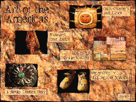

The Minneapolis Institute of Arts
Main Menu ~ Interactive Media Programs ~ Interactive Museum Maps ~ Back ~ Next
Art of the Americas
 (c) 48k
Location: Art of the Americas Gallery, 3rd floor
This interactive program features five examples of the diversity of the objects in The Minneapolis Institute of Arts collection, from ceremonial ornamentation of Alaska's Inuit people to the contemporary constructions and paintings of Ojibwe artist George Morrison.